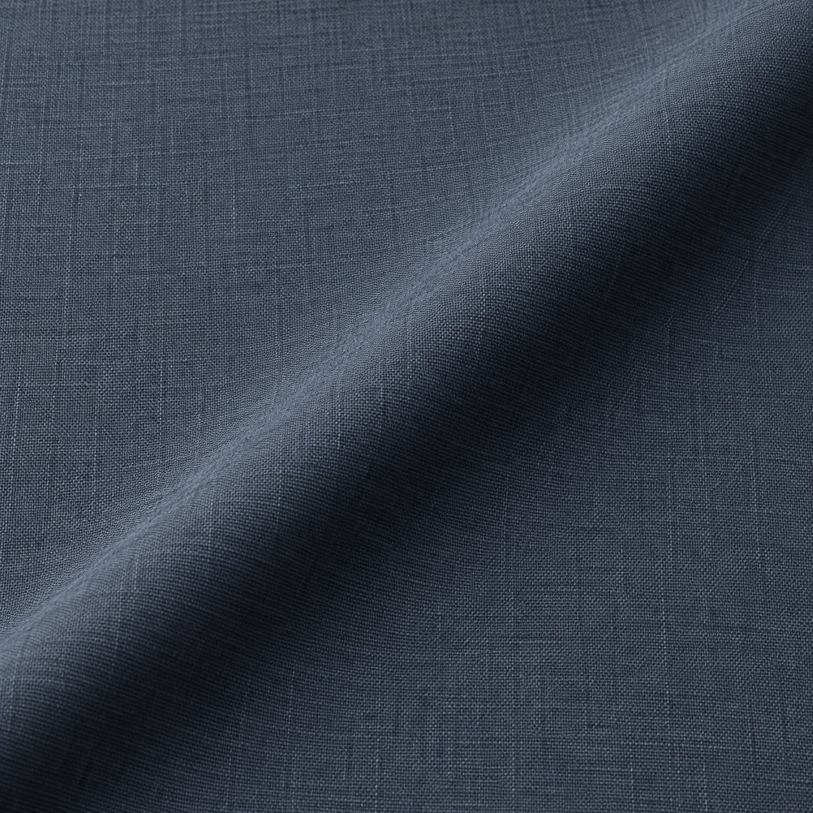

The inquiry / local preview
Begin with the cloth.
Build a fabric and tailoring brief. Copy or download it when ready.
Your selection
A useful conversation starts with details.
Choose a cloth reference, request type and quantity. The budget beside the form is an illustrative calculation for this mockup, not a quote or checkout.
- Select the proposed cloth and garment.
- Add fit, style and timing notes.
- Copy or download a brief to share yourself.
There is no contact endpoint or payment in this offline website. Nothing is sent by this form.